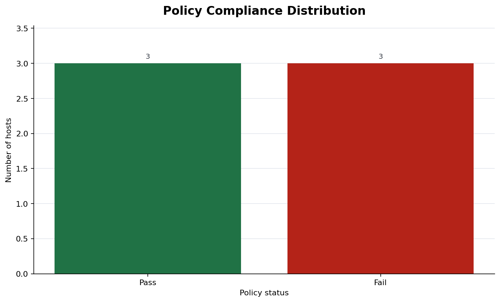
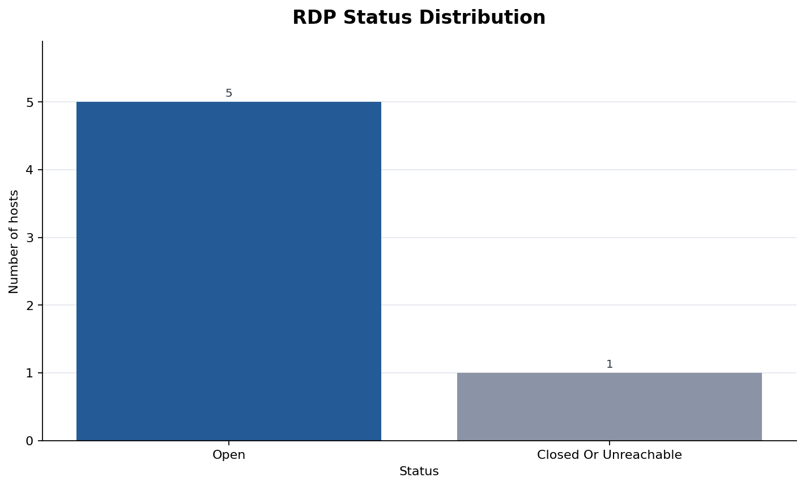
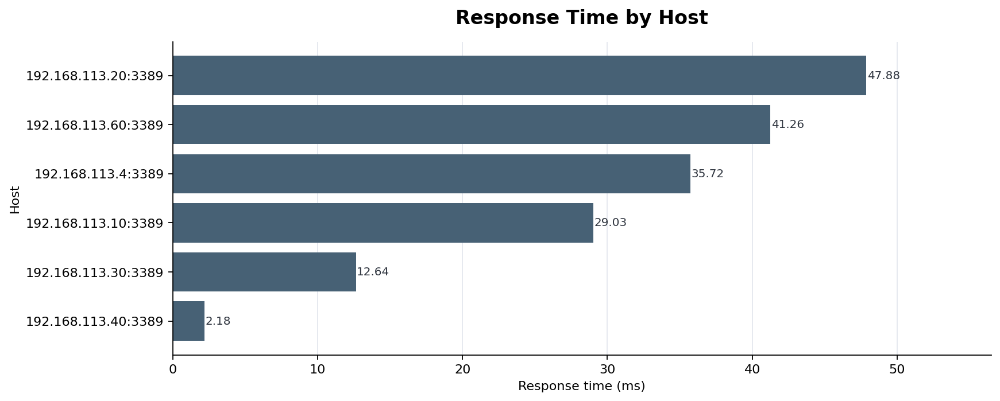
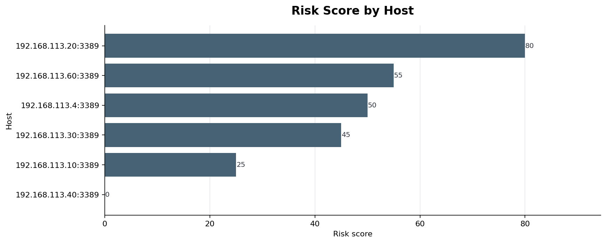
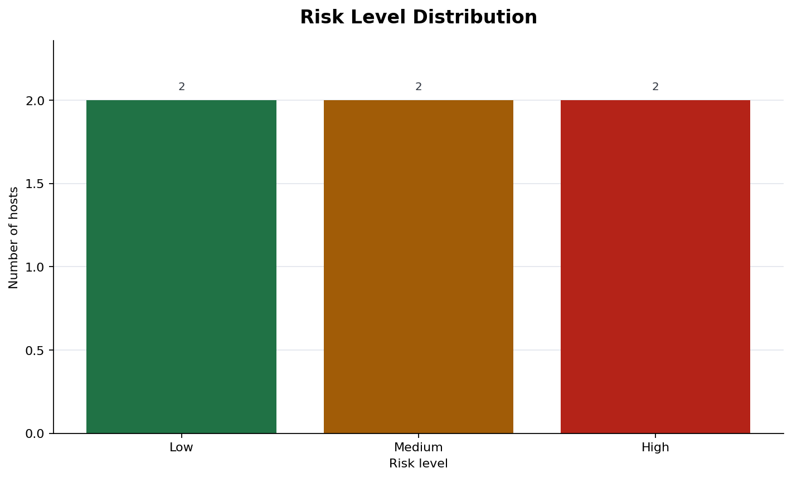

RDP Defense Report
Audit summary, policy status, baseline changes, and generated plots.
Hosts analyzed
6
RDP reachable
5
RDP detected
4
Policy failures
3
Policy warnings
0
High risk hosts
2
Highest risk score
80
Key Findings
- 192.168.113.4:3389 fails policy with risk score 50.
- 192.168.113.20:3389 fails policy with risk score 80.
- 192.168.113.60:3389 fails policy with risk score 55.
- 192.168.113.20:3389: New RDP exposure detected.
- 192.168.113.20:3389: Policy status changed to fail.
- 192.168.113.30:3389: New RDP exposure detected.
- 192.168.113.4:3389: NLA requirement weakened.
- 192.168.113.4:3389: Policy status changed to fail.
Audit Results
| Target | Status | RDP | Protocol | NLA | TLS | Response ms | Risk | Policy | Recommendations |
|---|---|---|---|---|---|---|---|---|---|
| 192.168.113.20:3389 | open | yes | tls | not required | detected | 47.88 | high 80 | fail |
|
| 192.168.113.60:3389 | open | yes | credssp_nla | required | detected | 41.26 | high 55 | fail |
|
| 192.168.113.4:3389 | open | yes | tls | not required | detected | 35.72 | medium 50 | fail |
|
| 192.168.113.30:3389 | open | no | - | unknown | unknown | 12.64 | medium 45 | pass |
|
| 192.168.113.10:3389 | open | yes | credssp_nla | required | detected | 29.03 | low 25 | pass |
|
| 192.168.113.40:3389 | closed_or_unreachable | no | - | unknown | unknown | 2.18 | low 0 | pass |
|
Baseline Changes
| Target | Change | Severity | Field | Before | After |
|---|---|---|---|---|---|
| 192.168.113.20:3389 | Policy status changed to fail | high | policy_status | pass | fail |
| 192.168.113.20:3389 | New RDP exposure detected | high | status | closed_or_unreachable | open |
| 192.168.113.30:3389 | New RDP exposure detected | high | status | closed_or_unreachable | open |
| 192.168.113.4:3389 | NLA requirement weakened | high | nla_required | True | False |
| 192.168.113.4:3389 | Policy status changed to fail | high | policy_status | pass | fail |
| 192.168.113.20:3389 | Risk score increased | medium | risk_score | 0 | 80 |
| 192.168.113.30:3389 | Risk score increased | medium | risk_score | 0 | 45 |
| 192.168.113.4:3389 | Risk score increased | medium | risk_score | 25 | 50 |
| 192.168.113.4:3389 | Selected RDP protocol changed | medium | selected_protocol | credssp_nla | tls |
| 192.168.113.50:3389 | Target was present in baseline but missing in current scan | medium | - | - | - |
| 192.168.113.60:3389 | Target is new in current scan | medium | - | - | - |
| 192.168.113.40:3389 | Policy status improved | info | policy_status | fail | pass |
| 192.168.113.40:3389 | Risk score decreased | info | risk_score | 100 | 0 |
| 192.168.113.40:3389 | RDP service is no longer reachable | info | status | open | closed_or_unreachable |
Plots
Policy Status
{kind=link}

Rdp Status
{kind=link}

Response Time
{kind=link}

Risk By Host
{kind=link}

Risk Distribution
{kind=link}

Limitations
- This tool performs authorized defensive checks only.
- The risk score is configurable and does not prove exploitability.
- NLA and TLS detection are best-effort and may be reported as unknown.
- No brute force, MITM, exploit, or honeypot behavior is implemented.